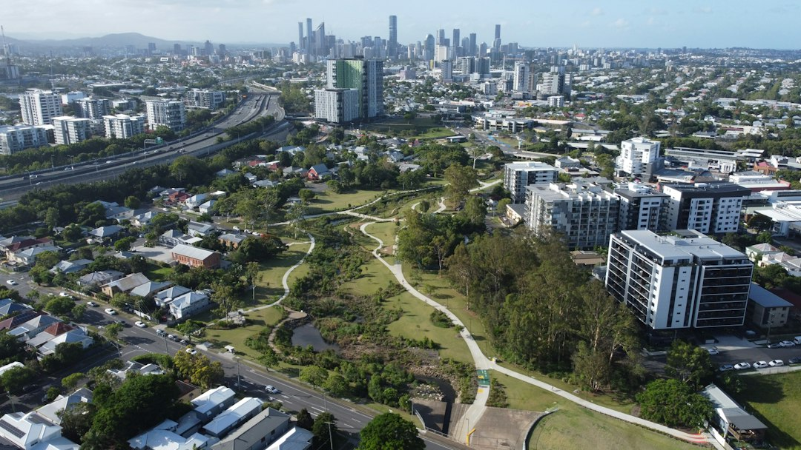

Start with retained height, water movement, nearby loads and approval status before choosing a wall material. The source guide notes that a wall that appears 800 millimetres from the lawn may be 1.4 metres from the footing once buried courses are counted. It also identifies Form 15 for design and Form 16 for inspection and compliance where engineered work is required.
For homeowners comparing retaining wall services brisbane options, the useful first step is recording what the wall must hold, where water will go and who must sign the work.
Retaining Wall Services Brisbane Explained
Retaining Walls Brisbane frames the early decision around grade, water, access, loads and approval questions before material choice. That order is useful because a retaining wall is not just a visible face. It works with soil, drainage paths, nearby structures, boundary conditions and the finished ground level behind it.
Before requesting a written scope, record the retained height from the base of the wall to the finished soil level behind it, not just the height visible from the lower side. Add wide photos, close photos and notes about cracks, leaning, decayed posts, erosion, wet areas and recent work above the wall. Those observations help separate a cosmetic preference from the actual site problem.
- Measure approximate wall length, exposed height and any changes in height.
- Photograph the wall ends, top of wall, base of wall and discharge points.
- Note driveways, sheds, pools, fences, buildings or other walls near the retained zone.
- Record whether water stains, soft ground or washed out fines appear after rain.
Drainage and Load Questions That Shape the Quote
The published guide says a wall carries the weight of the soil, water moving through that soil and anything placed on the ground above. A driveway, carport slab, pool shell or neighbouring shed may need to be treated as a load rather than ordinary yard space. That is why a quote should ask about the area above the wall, not only the face below it.
Water management deserves the same attention. The source describes a working drainage system as a connected path: clean aggregate, filter fabric suited to the soil, a graded subsoil line and a visible, lawful, maintainable outlet. A slotted pipe that disappears into the ground does not answer the practical question of where collected water leaves the retained area.
For Brisbane blocks with steep access, such as the inner hillside suburbs named in the source guide, machinery access can also affect the wall system. A heavy natural stone solution, a reinforced block wall and a sleeper wall can require very different excavation, footing and delivery conditions.
Material Choice Follows the Site Problem
The source guide names concrete sleeper, timber sleeper, reinforced block, sandstone or boulder and gabion systems. Each option suits different constraints. Concrete sleeper systems are described for replacements, boundaries and cut-and-fill projects where post embedment, access and drainage are assessed together. Treated timber is described for lower garden walls and terraces where moisture exposure, drainage and maintenance are explicit.
Core filled masonry is positioned for engineered loads, tighter footprints and finished residential walls that need coordinated footing and drainage details. Sandstone and boulder walls rely on gravity or batter, so bearing, block geometry, machinery access and runoff management become central. Gabions are described for landscape terraces and erosion settings where foundation preparation, filter separation and basket specification are part of the job.
A homeowner comparing retaining wall builders in Brisbane should ask each builder to explain why the proposed system suits the retained height, access and outlet plan, not just why it looks suitable.
Approvals, Licensing and Sign Off
The source guide states that Brisbane City Council describes limited circumstances where a retaining wall may be built without building approval, and that Queensland Development Code conditions sit behind those exemptions. Height is only one test. Surcharge loads, proximity to another wall or building, boundary position, easements, overlays and protected vegetation can each affect whether approval is needed.
Where design is required, the guide says it comes from an engineer registered with the Board of Professional Engineers of Queensland. It also identifies Form 15 for design and Form 16 for inspection and compliance of the built work. Those documents matter because they create a clearer trail between the design intent and the constructed wall.
The guide also says construction can be regulated building work above the statutory value threshold and that the contractor should hold a QBCC licence covering the class of work. Checking the public licence record before paying a deposit is a practical step for any substantial retaining wall service.
Who This Applies To
This guide is most useful for owners dealing with a leaning, cracked, decayed or undermined wall, or planning a new wall before landscaping, driveway work, fencing or a yard level change. It also applies when the retained ground supports something heavier than garden soil, because nearby structures and paved areas can change the design question.
It is less useful as a style catalogue. A wall face can be attractive and still fail to answer drainage, footing, outlet or approval questions. A stronger enquiry describes the site in plain terms and asks the contractor or designer to explain the sequence from investigation to written scope.
- Ask where collected water will discharge and how the outlet remains accessible.
- Ask whether an engineer, certifier or council approval pathway is expected.
- Ask how excavation access, spoil removal and material delivery will be handled.
- Ask what observations would change the quote after excavation starts.
- Record the wall. Measure approximate retained height, length and visible movement before asking for a scope.
- Map water. Trace downpipes, surface runoff, wet ground and any existing outlet after rain.
- Identify nearby loads. Note driveways, slabs, pools, fences, buildings, sheds and other walls near the retained zone.
- Ask about approvals. Confirm whether exemption conditions, engineering, certification or council checks may apply.
- Compare written scopes. Compare the drainage path, wall system, access assumptions and sign off documents rather than price alone.
| Option | Useful where | Key question |
|---|---|---|
| Concrete sleeper | Replacements, boundaries and cut-and-fill projects | How will post embedment, access and drainage be assessed together? |
| Timber sleeper | Lower garden walls and terraces | How are moisture exposure, member selection and maintenance addressed? |
| Reinforced block | Engineered loads and tighter footprints | How are footing and drainage details coordinated? |
| Sandstone or boulder | Gravity or battered natural stone walls | Do bearing, block geometry and machinery access suit the site? |
| Gabion | Landscape terraces and erosion settings | What foundation, filter separation and basket specification are proposed? |
Common questions
What should be checked before choosing a retaining wall material? Check retained height, soil and water symptoms, access, nearby loads, boundaries and approval questions before selecting concrete sleeper, timber, block, stone or gabion options.
Why is drainage such a big part of a retaining wall quote? The source guide says water moving through the soil is one of the three things a wall carries. A useful quote should describe filtration, collection, grading and a visible lawful outlet.
When might engineering be needed? The source guide says design may be required where exemption conditions do not apply, including issues such as height, surcharge loads, nearby structures, boundaries, easements, overlays or protected vegetation.
What documents are named for engineered work? The published guide identifies Form 15 for design and Form 16 for inspection and compliance where engineered retaining wall work follows that pathway.
This guide covers practical site checks for Brisbane retaining wall planning, drainage, materials, approval questions and written scopes.